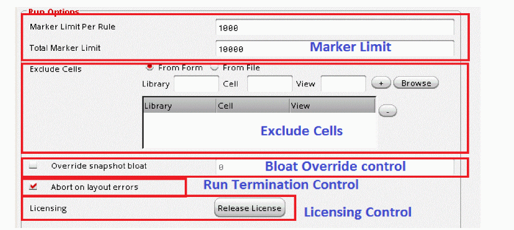
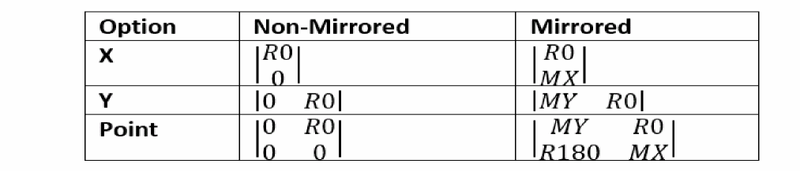
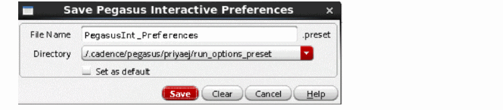
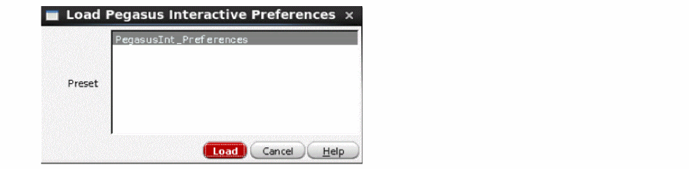

2
Pegasus Interactive Toolbar
Pegasus Interactive gives you the ability to customize default graphical interface, such as toolbar itself as well as its default run behavior. This chapter goes over each topic in great details.
The content of this chapter is organized as following:
Overview
Pegasus Interactive is an interactive DRC utility available in Virtuoso. It can:
- Directly access OA database and run DRC without data translation
- Refer to Pegasus compiled design rules database, snapshot, without compiling rule deck prior to DRC
Thus, for a quick DRC during layout editing, Pegasus Interactive is more effective than the traditional batch DRC for in design verification solution.
Pegasus Interactive allows you to:
- Edit layout within Virtuoso when Pegasus Interactive is conducting DRC
- Run DRC on either editable or the read-only cellview
Following figure shows the Pegasus Interactive toolbar:
Figure 2-1 Pegasus Interactive Toolbar Icons
- Pegasus Interactive Verify-Design: DRC operate mode. For detailed description on their usages, see Invoke Design Rule Checking.
- Snapshots: For more details on the usage of this toolbar refer to Manage Snapshots.
- Pegasus Interactive Run Options: For more details on the usage of this toolbar refer to Run Settings for Verify Design
- Pegasus Results Viewer: For more details on the usage of this toolbar refer to Error Viewing.
You can set Pegasus Interactive toolbar availability through Window > Toolbars > Pegasus Interactive. If Pegasus Interactive is not part of Toolbars selection, this is the indication that you did not point to the proper Pegasus installation.
Figure 2-2 Setting Pegasus Interactive toolbar visibility
Toolbar Icons
You can customize the toolbar. Following figure shows different ways of customizing the default Pegasus Interactive toolbar.
Figure 2-3 Pegasus Interactive Toolbar Customization
Verify-Design
Verify-Design is an area specific check. Therefore, you can set the default area check to any of following through PegasusInt_InitArea:
For details of PegasusInt_InitArea setup, refer to the Virtuoso CDS Environmental Variables section.
Following example sets area of checking based on current visible area.
Figure 2-4 Default Area check to "Visible Area"
Default Active Snapshot
By default, items in the snapshot combo field are sorted alphabetically. The first item on the sorted list will be set as an active snapshot and displayed in the combo field. If you prefer to customize a default active snapshot other than tool's selection, you can define it through PegasusInt_InitSnapshot.
Once it is set, Pegasus Interactive first searches for the existence of this snapshot and displays it as an active snapshot after Pegasus Interactive toolbar initialization. If your preferred snapshot is not found, Pegasus Interactive will resolve to its default behavior.
Following example shows Pegasus Interactive’s default behavior on determining the active snapshot by setting the first item from the alphabetical sorted list. To override this behavior, PegasusInt_InitSnapshot is set to FinBound prior to launching Virtuoso. Once the layout is opened, FinBound is displayed in the snapshot combo field.
Figure 2-5 Set active snapshot
Run Option
You can query the snapshot header information through a snapshot info inquiry utility. It is part of the Run Option icon drop-down list.
Figure 2-6 Enable Snapshot Info Inquiry
For details of snapshot info inquiry, refer to Snapshots Inquiry.
Error Browsing Utility
Pegasus Interactive allows you to view violations through following options:
Pegasus RV is the default error browser. To customize the default browser, you can specify the setting through PegasusInt_MarkerBrowser.
Figure 2-7 Customize default Error Browser
Pegasus Interactive Run Options
The Pegasus Interactive Run Options form contains three tabs: Verify Design, SignOff Fill and Density Analysis.
Figure 2-8 Pegasus Interactive Run Options form
Run Settings for Verify Design
Following outlines the topics described in this section:
- Enable Dynamic Rule Filtering
- Customize Run options
- Set error browsing utility
- Snapshot Creation and Management
To interactively change current Pegasus Interactive behavior, you can invoke the Pegasus Interactive Run Options form by clicking on the Pegasus Interactive Run Options icon on the toolbar.
All options described in this section are applicable to entire Virtuoso session only, and are not window specific. If new layout is opened within the Virtuoso session, it will inherit settings set in the Pegasus Interactive Run Options form. Once Virtuoso session is closed, the options interactively set by you are not retained.
Figure 2-9 Default Option Form
Dynamic Rule Filtering (DRF)
Pegasus Interactive has a built-in intelligence to select rules based on the layer visibility. In other words, you can ask Pegasus Interactive to select checks based on current visible layers displayed in the Palette. To effectively use this feature, this dynamic rule filtering capability should be paired up with Virtuoso valid LPP utility. Then, Pegasus Interactive further performs rule selection based on current visible layers display status in the Palette. Essentially, it becomes a What-You-See-Is-What-You-Check utility when they are paired up. Tool makes the assumption that for any visible layer displayed in the Palette that matters to you, you only want to ensure editing does not introduce any unforeseen DRC violations which are avoidable during layout editing and planning.
In Pegasus Interactive Run Options, you can enable the Use layer visibility option located in the Rules for Visible Layers field. Once it is enabled, rules are selected based on visible layers to its adjacent layers, which may or may not be visible in the Palette. For example, if Metal1 is visible in the Palette, rules for Metal1 itself checks, Metal1-Vias checks as well as Metal1-Metal2 checks will be selected.
Furthermore, you can exclude density or connectivity checks by enabling Exclude Checks: density or Exclude Checks: connectivity options.
Figure 2-10 Dynamic Rule Filtering Options
This option needs to be paired up with Virtuoso valid LPP utility. It can be set interactively through Layout Editor Options GUI. It is one of options under the Editor Controls field.
Figure 2-11 Setting Valid LPP utility
Its default option can also be set by using validLppFilterOn CDS environmental variable as following:
envSetVal("layout" "validLppFilterOn" 'boolean 't)
Furthermore, you can exclude density or connectivity checks by enabling Exclude checks: Density or Connectivity options. These options are independent of Use layer visibility.
Similarly, DRF default behavior can be controlled using drdPegasusIntFunctionalPresets CDS environmental variable as following:
drdPegasusIntFunctionalPresets environment variable should be used. If you are using ICADV123/IC617 ISR20 or older then drdPVSFunctionalPresets environment variable should be used.Figure 2-12 Customize default DRD setting
Run Options
Five elements are grouped under general run option field:
- Marker Limit
- Exclude Cells
- Bloat Override control
- Run Termination Control
-
Licensing Control
Figure 2-13 General Run Option content outline
These elements are described in following sections:
Marker Limit
For a given run regardless of operate modes, you can set a limit on the total violation counts in the Total Marker Limit text box. Once total count of markers exceeds this threshold, only maximum amounts of markers are generated and displayed in the layout. Furthermore, you can define maximum marker counts per rule interactively in the Marker Limit Per Rule text box.
In addition to the interactive setting of these marker limits, you can set the default values through following CDS environment variables:
Exclude Cells
You can also choose to exclude certain cells from a given run. There are two ways of declaring excluded cell:
By selecting the From Form option, you can either fill cell information explicitly in the Library, Cell and View text boxes or through the Library Browser form. Latter automatically fills in the Library, Cell and View text boxes once you finalize selection in the library browser.
Figure 2-14 Set Cellview information through Library Browser
Also, if you would like to select a set of cells have similar naming convention, you can issue wildcard on any entry in Library, Cell and View fields.
Two types of wildcards are supported:
For example, you would like Pegasus Interactive to exclude all of cell has name starts with NANDFO in any library found, you can fill Library, Cell and View fields as following:
Figure 2-15 Exclude Cell based on searching criteria
Commit the selection by clicking the plus sign (+) button. If the Information is insufficient, a warning message is issued in CIW. Following example shows entered cellview information is insufficient for Pegasus Interactive to process.
Figure 2-16 Cellview validity check
In general, Pegasus Interactive checks cellview information against libraries declared in cds.lib. If it is not in cds.lib, it is considered not accessible by Pegasus Interactive.
You can also declare a list of excluded cells in the file and then load the content through From File option. By clicking the "…" button. The Select Exclude cell File form is available for you to select the file interactively.
Figure 2-17 Select file contains cell information
Once the file is selected, its path will be populated under File text box. To commit the cell selection via file, click Load. During the loading, Pegasus Interactive checks:
If any insufficient information is detected, warning messages are displayed in CIW.
Correct syntax for cell declaration in the file should be in the order of library, cell and view and they are delimited by space between declarations. Also, you can declare wildcard, either ? or *, to conduct batch cell selection. Following example shows correct syntax declared in cell.list. Complete cell information is loaded into exclude cell table after clicking Load.
Figure 2-18 Load cell.list content
You can sort column alphabetically in the Exclude Cells table by clicking the column header: Library, Cell or View.
To remove one or multiple cells from the Exclude Cells table, select one or more rows by clicking the minus sign (-) button.
You can declare default exclude cells file path through PegasusInt_ExcludeCellFile.
Bloat Override Control
Pegasus Interactive allows you to check DRC on certain area of the cellview. Basically the final area of checking is determined by the maximum bloat value found between the value stored in the snapshot.
However, you can override bloat value for current Pegasus Interactive session without re-generating of snapshot using Override snapshot bloat option of the Pegasus Interactive Run Option form:
Figure 2-19 Override snapshot bloat option of Pegasus Interactive Run Option form
By default, Override snapshot bloat is disabled. Once you enable it you can enter any positive float value including "0". If you enter "0" bloat value, it would mean that you want to check area "as-it-is".
If you specified override snapshot bloat value, then following message will be printed to Virtuoso CIW window prior Pegasus Interactive DRC run:
Pegasus Interactive: Bloat value for current snapshot (3.00) is now set to 5.00 (inspect Run Options form)
After Pegasus Interactive DRC run regardless operate modes, run complete message includes the bloat value used during the run. Example:
*INFO* Pegasus Interactive
Cellview Name: top
Snapshot: Default
Bloat Value: 5
Summary: 12 markers created
Also, enabling of Override snapshot bloat triggers the Verify Design icons update in the Pegasus Interactive toolbar for all of opened layout window:
In addition, the bloat value is shown as tooltip of toolbar icon:
Figure 2-20 Bloat Value tooltip
Run Termination Control
By default, Pegasus Interactive terminates the run if it detects following errors:
This default behavior can be altered through the Abort on Layout Error option.
Figure 2-21 Default Pegasus Interactive run termination setting
To continue DRC despite of outcome of layout validity, deselect the check box. In this case, errors found during layout validity check will be treated as soft errors and run proceeds as it-is.
Licensing Control
As described in Licenses Requirements and Behaviors, Pegasus Interactive checks out licenses and holds them until termination condition is met. Within a Virtuoso session, you can release the license anytime through the Release License button. It terminates any existing Pegasus Interactive session. Only license(s) documented in snapshot header is released. License pertaining to Pegasus RV is controlled by its own activity process.
Figure 2-22 Release License Trigger
Marker Browser
This field allows you to switch between two different types of browsers. If there are any existing OA markers created by Pegasus Interactive or error highlighted on the layout, they are erased when you switch from Pegasus Results Viewer to Annotation Browsers or vice versa.
Since Pegasus Interactive retains last run result in an ascii format, you can reload this data any time by invoking Pegasus Results Viewer through the toolbar. On the contrary, you cannot view last run results via Annotation Browser on demand. For example, Pegasus Interactive’s latest run generates OA markers on the layout. You would like to first view results in Pegasus Results Viewer and then use Annotation Browser for DRC fixing afterward. In this case, error highlights are generated on the layout and errors are automatically reported in Pegasus Results Viewer when you toggle from Annotation Browser to Pegasus Results Viewer. However, OA markers are not restored once you toggle back to Annotation Browser from Pegasus Results Viewer.
Figure 2-23 Default Browser setting
For details on interactive setting browser preference and for details on each browser behavior and customization, refer to Error Viewing.
Snapshots
The content of snapshot setting field can be customized. The intent of this use model is to give CAD administrator control on the snapshot accessibility to target users. CAD administrator determines whether snapshot should be generated or maintained either globally or locally. Based on this decision, snapshot field content display can be controlled through following shell environmental variables:
Condition One: Global Snapshot Control by CAD Only
In this case, CAD wants a full control of snapshot creation and maintenance. Since users are not allowed to create local snapshot, snapshot creation trigger can be hidden through PegasusInt_EnableSNPCreation. Depending on the number of snapshot directories, CAD can decide whether to disable or enable Snapshots management field through PegasusInt_EnableSNPManagement.
Following example shows the complete removal of the Snapshots field by setting both shell environment variables to no.
Figure 2-24 Disable Snapshots Field
If there are more than one snapshot directories maintained by CAD and end user can access them, the CAD can enable snapshot management utility as following:
Figure 2-25 Snapshot management utility
For details of snapshot management, refer to Manage Snapshots.
Scenario Two: Local Snapshot Control by User Only
CAD only maintains technology setup and user is responsible of creating and maintaining local snapshots. Snapshot management utility needs to be available for you to upgrade any out of sync snapshots detected by Pegasus Interactive. This utility can be enabled through PegasusInt_Maintenance.
Figure 2-26 Enable Snapshot management
For details of creating snapshot, refer to Quick Start: Create Snapshot.
For details of upgrading snapshot, refer to Snapshots Upgrade.
Scenario Three: Global and Local Snapshot Control by User
For this use model, CAD provides a set of generic global snapshots and user can create custom snapshots that are derived from these global snapshots.
Figure 2-27 Complete Snapshots field
Run Settings for SignOff Fill
Click the SignOff Fill tab to define the run settings for SignOff Fill.
Input
-
Rule Map: Enter the name of the sign-off rule map file or click Browse to select it. Use this file when fill rule deck uses the
outputPVL command to output metal fills. The syntax of the file is:<rulename> dfII_layer dfII_purpose
Example:fill.rul
…
rule m1_fill_output { copy m1_fill }
output -drc m1_fill_output -gds 15 35 fill.gds -output all
rule m2_fill_output { copy m2_fill }
output -drc m2_fill_output -gds 17 35 fill.gds -output all
rulemap.file:
m1_fill_output Metal1 fill
m2_fill_output Metal2 fill
- DFMRDB Layer Map: By default Pegasus Interactive SignOff fill uses technology layermap file to read generated dummy fills and map them into Virtuoso to specific layer/view purpose. You can redefine it using this field.
Output
-
Instance: Specifies prefix of instance name of fill cell. Pegasus Interactive fill puts all generated fills into specific cell and then inserts this cell as instance into the block. Use this field to redefine instance name prefix. Default instance name prefix is
pegasus_fill. Full instance name is<prefix>_RUN_FILL. -
Add Snapshot Name to Cell Name: Select the check box to add the snapshot name to the name of the cell with generated fills as secondary prefix. When enabled, the fill cell name is
pegasus_fill_<snapshot name>_<original cell name>. - Custom Fill Library/Cell/View: Select the check box to customize the library, cell and view of the cell with generated fills.
Run Options
Figure 2-31 Run Options Section
- Clear Existing Fill: Select the check box to delete fills, generated by previous SignOff Fill runs before the new run. The tool deletes existing fills, generated by previous SignOff Fill runs. Do not select the check box to retain existing fills in each new run.
-
Area: Enter the coordinates or click Select to generate dummy fills for the specified area. Dummy fills will not be generated outside this specified area. You can define
pgssUserSelectedFillArea()function to select area to fill. If you have defined this function then clicking on the Use Function button fills the area field with already defined coordinates. If you have not defined the function then an error message is displayed. -
Symmetry: Select the symmetry value from the following options based on which the fill shapes will be generated. To use any option other than None, the Area option must be selected. If the Area option is not selected and area is not defined, an error message is displayed.
- None: This is the default mode. No symmetry operation will be performed in this case.
- X: When X is specified, the symmetry operation is performed along the X-axis.
- Y: When Y is specified, the symmetry operation is performed along the Y-axis.
- Point: When point is specified, the symmetry operation is performed along the axis point.
-
Mirrored: When you select Mirrored check box, the X, Y, and Point options perform Mirrored symmetry operation. The following figure shows the result of mirrored and non-mirrored Symmetry option result:

- Exclude Cells: Use this option to exclude cells from fill insertion. The Exclude Cells option is similar to the Exclude cells option of Run Settings for Verify Design. For detailed description, see: Exclude Cells.
-
Layers: Use this option to define layers to be used in the run.
- All: Select this radio button to process all layers.
- Active Layer: Select this radio button to perform the run on the currently active layer on Virtuoso layer palette.
- Visible Layer: Select this radio button to generate dummy fills for layers, which are visible on Virtuoso layer palette.
-
Custom: Select this radio button to generate dummy fills for the custom layers defined in the text box. The syntax for specifying layer/purpose in the Custom layer field is the following:
<layername>/<purposename> ... <layername>/<purposename>
Wildcards are supported.
Example 1:Metal1/drawing
Fills will be generated forMetal1layer.
Example 2:Metal1/drawing Metal2/drawing Metal3/drawing
Fills will be generated forMetal1,Metal2, andMetal3layers.
Example 3:Metal*/drawing
Fills will be generated for all layers, which start withMetal.
Run Settings for Density Analysis
Density analysis generates density results from Pegasus Interactive toolbar for layers of interest. Rule deck is not required. Results are shown in Pegasus Results Viewer as heatmap and histograms.
Figure 2-32 Density Analysis Tab
Layer Visibility
Figure 2-33 Layer Visibility Section
-
Active Layer: Select this radio button to perform density analysis on the active layer on Virtuoso Palette.
-
Purpose: By default density results will be generated only for layer/purpose pair, selected on Virtuoso Layer palette. Use the Purpose drop-down list to redefine list of layer purpose.
- All: Density results will be generated for all purposes of selected layer. Each layer/purpose result will be shown in separate tabs of DRC RV.
- Selected: Density results will be generated for selected purpose only.
- Custom: Density results will be generated for purposes defined in the custom field. Each layer/purpose results will be shown in separate tabs of DRC RV.
- Merge: This option is valid when the Purpose field is either All or Custom. Select this check box to merge the result for layer purposes into a single tab. This is useful when you have metal and fills in different purposes (Metal1/drawing and Metal1/fill) and want to generate density results for merged drawing and fill purposes.
-
Purpose: By default density results will be generated only for layer/purpose pair, selected on Virtuoso Layer palette. Use the Purpose drop-down list to redefine list of layer purpose.
-
Visible Layers: Select this radio button to perform density analysis for layers, which are visible on Virtuoso layer palette.
-
Purpose: By default density results will be generated only for layer/purpose pair, visible on Virtuoso Layer palette. Use the Purpose drop-down list to redefine list of layer purpose.
- All: Density results will be generated for all purposes of selected layer. Each layer/purpose result will be shown in separate tabs of DRC RV.
- Visible: Density results will be generated for visible purposes only.
- Custom: Density results will be generated for purposes defined in the custom field. Each layer/purpose results will be shown in separate tabs of DRC RV.
- Merge: This option is valid when the Purpose field is either All or Visible. Select this check box to merge the result for layer purposes into a single tab. This is useful when you have metal and fills in different purposes (Metal1/drawing and Metal1/fill) and want to generate density results for merged drawing and fill purposes.
-
Purpose: By default density results will be generated only for layer/purpose pair, visible on Virtuoso Layer palette. Use the Purpose drop-down list to redefine list of layer purpose.
-
Custom: Select this radio button to perform density analysis for the custom layers defined in the text box. The syntax for specifying layer/purpose in the Custom layer field of the Density Analysis form is the following:
Example 1:Metal1/drawing
Density Analysis ofMetal1/drawingwill be output.
Example 2:(Metal1/drawing Metal2/drawing) Metal3/drawing
Density Analysis histograms ofMetal1/drawingandMetal2/drawingwill be merged to create one tab in the viewer. Density Analysis histogram ofMetal3/drawingwould be created as a separated tab in the viewer.
Example 3:Met*/drawing
All histograms of layers having "Met" in their name and having drawing purpose will be created as separate tabs.
Example 4:(Met*/drawing)
All histograms as explained in Example 3 will be merged in a single tab.
Density
-
Size X[Y] and Step X[Y]: Specify the size of the rectangle window, which is used to calculate density. This is equivalent of the
-windowoption of PVL commanddensity. Default window size is 10x10. - Scale [%]: Specify the scale range between which you want to check the density.
-
Gradient: Optional keyword specifies the gradient value that windows must satisfy. This is equivalent of the
-gradientoption of PVL commanddensity. For more details, refer to Pegasus Developer Guide.
Viewer
- Histogram Bins: Specify the number of histogram data bins.
- Marker Limit (Total): Specify the number to set a limit on the total violation counts shown in the histogram.
- Marker Limit (Per Rule): Specify the number to set a limit on the total violation counts per rule shown in the histogram.
Coloring
- Enable Coloring: For a given Layer-Purpose pair, a set of polygons can have additional color attributes assigned on them: color and color state in the layout. By selecting Enable Coloring check box, Pegasus Interactive understands color implications set on these polygons.
Buttons at the Bottom of the Form
- OK - Closes the Preferences form, saving any changes you have made.
- Cancel - Closes the Preferences form without saving any changes.
- Defaults - Loads the default form setting.
- Apply - Applies any preference changes that you have made. This does not close the form.
-
Save to - Saves the changes you have made to a preset file. You can use that preset whenever you want to use the settings set in the file. Clicking the button opens the Save Pegasus Interactive Preferences form:
- File Name: Enter the file name for the Pegasus Interactive Run Options form settings you have made.
-
Directory: Select the location where you want to save the file. The Directory drop-down list allows you to set the directory path that preset is going to save to. By default the Directory field allows you to select two locations: the local
.cadence/pegasus/$USERdirectory and.cadence/pegasus/$USERat the$HOMEdirectory. However, its drop-down items can be expanded usingCDS_WORKAREAenvironment variable. - Set as default: Select this check box to save the settings as default.
- Click Save to save the settings.
-
Load From - Loads the form settings from an already saved preset file. Clicking Load Form opens the Load Pegasus Interactive Preferences form:
The form lists presets saved by user in different locations. These locations and search order are defined by setup.loc file, which
Cadence provides in $PEGASUS_INSTAL_DIR/share/cdssetup/setup.loc. Default setup.loc file defines search order as follows:
. : cwd should always be searched first.
$CDS_WORKAREA: User workarea if defined.
$CDS_SEARCHDIR: This is set by various tools during tool startup.
$HOME
$CDS_PROJECT: Project storage area, ignored if not defined.
$CDS_SITE : Site Setup Info - default is $CDS_INST_DIR/share/local.
$(compute:THIS_TOOL_INST_ROOT)/share: Cadence Default Setup Info. - Help - Brings up context-sensitive help.
Return to top